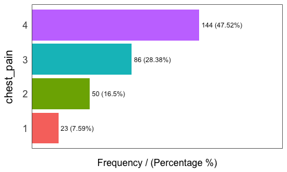
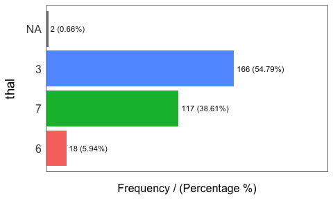
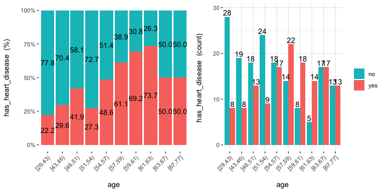
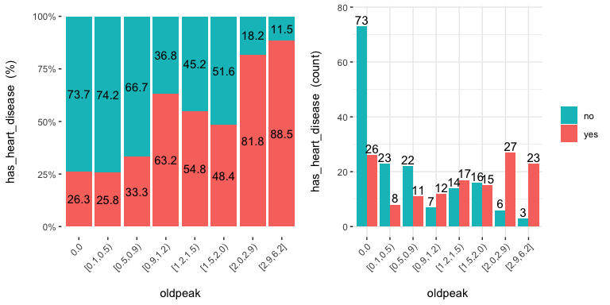
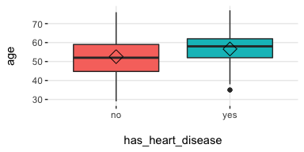
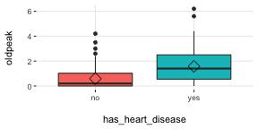
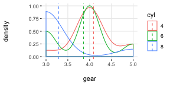
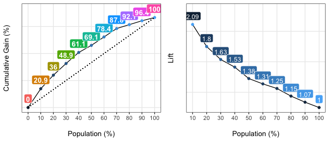

title: “funModeling quick-start” author: “Pablo Casas” output: rmarkdown::html_vignette date: “2020-04-06” vignette: > %\VignetteIndexEntry{funModeling quick-start} %\VignetteEngine{knitr::rmarkdown} %\usepackage[utf8]{inputenc} —

This package contains a set of functions related to exploratory data analysis, data preparation, and model performance. It is used by people coming from business, research, and teaching (professors and students).
funModeling is intimately related to the Data Science Live Book -Open Source- (2017) in the sense that most of its functionality is used to explain different topics addressed by the book.

Opening the black-box
Some functions have in-line comments so the user can open the black-box and learn how it was developed, or to tune or improve any of them.
All the functions are well documented, explaining all the parameters with the help of many short examples. R documentation can be accessed by: help("name_of_the_function").
About this quick-start
This quick-start is focused only on the functions. All explanations around them, and the how and when to use them, can be accessed by following the “Read more here.” links below each section, which redirect you to the book.
Below there are most of the funModeling functions divided by category.
Exploratory data analysis
status: Dataset health status (2nd version)
Similar to df_status, but it returns all percentages in the 0 to 1 range (not 1 to 100).
## variable q_zeros p_zeros q_na p_na q_inf p_inf type unique
## 1 age 0 0.0000000 0 0.00000000 0 0 integer 41
## 2 gender 0 0.0000000 0 0.00000000 0 0 factor 2
## 3 chest_pain 0 0.0000000 0 0.00000000 0 0 factor 4
## 4 resting_blood_pressure 0 0.0000000 0 0.00000000 0 0 integer 50
## 5 serum_cholestoral 0 0.0000000 0 0.00000000 0 0 integer 152
## 6 fasting_blood_sugar 258 0.8514851 0 0.00000000 0 0 factor 2
## 7 resting_electro 151 0.4983498 0 0.00000000 0 0 factor 3
## 8 max_heart_rate 0 0.0000000 0 0.00000000 0 0 integer 91
## 9 exer_angina 204 0.6732673 0 0.00000000 0 0 integer 2
## 10 oldpeak 99 0.3267327 0 0.00000000 0 0 numeric 40
## 11 slope 0 0.0000000 0 0.00000000 0 0 integer 3
## 12 num_vessels_flour 176 0.5808581 4 0.01320132 0 0 integer 4
## 13 thal 0 0.0000000 2 0.00660066 0 0 factor 3
## 14 heart_disease_severity 164 0.5412541 0 0.00000000 0 0 integer 5
## 15 exter_angina 204 0.6732673 0 0.00000000 0 0 factor 2
## 16 has_heart_disease 0 0.0000000 0 0.00000000 0 0 factor 2Note: df_status will be deprecated, please use status instead.
data_integrity: Dataset health status (2nd version)
A handy function to return different vectors of variable names aimed to quickly filter NA, categorical (factor / character), numerical and other types (boolean, date, posix).
It also returns a vector of variables which have high cardinality.
It returns an ‘integrity’ object, which has: ‘status_now’ (comes from status function), and ‘results’ list, following elements can be found: vars_cat, vars_num, vars_num_with_NA, etc. Explore the object for more.
##
## ◌ {Numerical with NA} num_vessels_flour
## ◌ {Categorical with NA} thal## $vars_num_with_NA
## variable q_na p_na
## 1 num_vessels_flour 4 0.01320132
##
## $vars_cat_with_NA
## variable q_na p_na
## 1 thal 2 0.00660066
##
## $vars_cat_high_card
## [1] variable unique
## <0 rows> (or 0-length row.names)
##
## $MAX_UNIQUE
## [1] 35
##
## $vars_one_value
## character(0)
##
## $vars_cat
## [1] "gender" "chest_pain" "fasting_blood_sugar" "resting_electro"
## [5] "thal" "exter_angina" "has_heart_disease"
##
## $vars_num
## [1] "age" "resting_blood_pressure" "serum_cholestoral" "max_heart_rate"
## [5] "exer_angina" "oldpeak" "slope" "num_vessels_flour"
## [9] "heart_disease_severity"
##
## $vars_char
## character(0)
##
## $vars_factor
## [1] "gender" "chest_pain" "fasting_blood_sugar" "resting_electro"
## [5] "thal" "exter_angina" "has_heart_disease"
##
## $vars_other
## character(0)
plot_num: Plotting distributions for numerical variables
Plots only numeric variables.

Notes:
-
bins: Sets the number of bins (10 by default). -
path_outindicates the path directory; if it has a value, then the plot is exported in jpeg. To save in current directory path must be dot: “.”
profiling_num: Calculating several statistics for numerical variables
Retrieves several statistics for numerical variables.
## variable mean std_dev variation_coef p_01 p_05 p_25 p_50 p_75 p_95
## 1 age 54.4389439 9.0386624 0.1660330 35.00 40.0 48.0 56.0 61.0 68.0
## 2 resting_blood_pressure 131.6897690 17.5997477 0.1336455 100.00 108.0 120.0 130.0 140.0 160.0
## 3 serum_cholestoral 246.6930693 51.7769175 0.2098840 149.00 175.1 211.0 241.0 275.0 326.9
## 4 max_heart_rate 149.6072607 22.8750033 0.1529004 95.02 108.1 133.5 153.0 166.0 181.9
## 5 exer_angina 0.3267327 0.4697945 1.4378558 0.00 0.0 0.0 0.0 1.0 1.0
## 6 oldpeak 1.0396040 1.1610750 1.1168436 0.00 0.0 0.0 0.8 1.6 3.4
## 7 slope 1.6006601 0.6162261 0.3849825 1.00 1.0 1.0 2.0 2.0 3.0
## 8 num_vessels_flour 0.6722408 0.9374383 1.3944978 0.00 0.0 0.0 0.0 1.0 3.0
## 9 heart_disease_severity 0.9372937 1.2285357 1.3107265 0.00 0.0 0.0 0.0 2.0 3.0
## p_99 skewness kurtosis iqr range_98 range_80
## 1 71.00 -0.2080241 2.465477 13.0 [35, 71] [42, 66]
## 2 180.00 0.7025346 3.845881 20.0 [100, 180] [110, 152]
## 3 406.74 1.1298741 7.398208 64.0 [149, 406.74] [188.8, 308.8]
## 4 191.96 -0.5347844 2.927602 32.5 [95.02, 191.96] [116, 176.6]
## 5 1.00 0.7388506 1.545900 1.0 [0, 1] [0, 1]
## 6 4.20 1.2634255 4.530193 1.6 [0, 4.2] [0, 2.8]
## 7 3.00 0.5057957 2.363050 1.0 [1, 3] [1, 2]
## 8 3.00 1.1833771 3.234941 1.0 [0, 3] [0, 2]
## 9 4.00 1.0532483 2.843788 2.0 [0, 4] [0, 3]Note:
-
plot_numandprofiling_numautomatically exclude non-numeric variables
freq: Getting frequency distributions for categoric variables
library(dplyr)
# Select only two variables for this example
heart_disease_2=heart_disease %>% select(chest_pain, thal)
# Frequency distribution
freq(heart_disease_2)
## chest_pain frequency percentage cumulative_perc
## 1 4 144 47.52 47.52
## 2 3 86 28.38 75.90
## 3 2 50 16.50 92.40
## 4 1 23 7.59 100.00
## thal frequency percentage cumulative_perc
## 1 3 166 54.79 54.79
## 2 7 117 38.61 93.40
## 3 6 18 5.94 99.34
## 4 <NA> 2 0.66 100.00## [1] "Variables processed: chest_pain, thal"Notes:
-
freqonly processesfactorandcharacter, excluding non-categorical variables. - It returns the distribution table as a data frame.
- If
inputis empty, then it runs for all categorical variables. -
path_outindicates the path directory; if it has a value, then the plot is exported in jpeg. To save in current directory path must be dot: “.” -
na.rmindicates ifNAvalues should be excluded (FALSEby default).
Correlation
correlation_table: Calculates R statistic
Retrieves R metric (or Pearson coefficient) for all numeric variables, skipping the categoric ones.
## Variable has_heart_disease
## 1 has_heart_disease 1.00
## 2 heart_disease_severity 0.83
## 3 num_vessels_flour 0.46
## 4 oldpeak 0.42
## 5 slope 0.34
## 6 age 0.23
## 7 resting_blood_pressure 0.15
## 8 serum_cholestoral 0.08
## 9 max_heart_rate -0.42Notes:
- Only numeric variables are analyzed. Target variable must be numeric.
- If target is categorical, then it will be converted to numeric.
var_rank_info: Correlation based on information theory
Calculates correlation based on several information theory metrics between all variables in a data frame and a target variable.
## var en mi ig gr
## 1 heart_disease_severity 1.846 0.995 0.9950837595 0.5390655068
## 2 thal 2.032 0.209 0.2094550580 0.1680456709
## 3 exer_angina 1.767 0.139 0.1391389302 0.1526393841
## 4 exter_angina 1.767 0.139 0.1391389302 0.1526393841
## 5 chest_pain 2.527 0.205 0.2050188327 0.1180286190
## 6 num_vessels_flour 2.381 0.182 0.1815217813 0.1157736478
## 7 slope 2.177 0.112 0.1124219069 0.0868799615
## 8 serum_cholestoral 7.481 0.561 0.5605556771 0.0795557228
## 9 gender 1.842 0.057 0.0572537665 0.0632970555
## 10 oldpeak 4.874 0.249 0.2491668741 0.0603576874
## 11 max_heart_rate 6.832 0.334 0.3336174096 0.0540697329
## 12 resting_blood_pressure 5.567 0.143 0.1425548155 0.0302394591
## 13 age 5.928 0.137 0.1371752885 0.0270548944
## 14 resting_electro 2.059 0.024 0.0241482908 0.0221938072
## 15 fasting_blood_sugar 1.601 0.000 0.0004593775 0.0007579095Note: It analyzes numerical and categorical variables. It is also used with the numeric discretization method as before, just as discretize_df.
cross_plot: Distribution plot between input and target variable
Retrieves the relative and absolute distribution between an input and target variable. Useful to explain and report if a variable is important or not.
## Plotting transformed variable 'age' with 'equal_freq', (too many values). Disable with 'auto_binning=FALSE'## Plotting transformed variable 'oldpeak' with 'equal_freq', (too many values). Disable with 'auto_binning=FALSE'
Notes:
-
auto_binning:TRUEby default, shows the numerical variable as categorical. -
path_outindicates the path directory; if it has a value, then the plot is exported in jpeg. -
inputcan be numeric or categoric, andtargetmust be a binary (two-class) variable. - If
inputis empty, then it runs for all variables.
plotar: Boxplot and density histogram between input and target variables
Useful to explain and report if a variable is important or not.
Boxplot:
plotar(data=heart_disease, input = c("age", "oldpeak"), target="has_heart_disease", plot_type="boxplot")
Density histograms:

Notes:
-
path_outindicates the path directory; if it has a value, then the plot is exported in jpeg. - If
inputis empty, then it runs for all numeric variables (skipping the categorical ones). -
inputmust be numeric and target must be categoric. -
targetcan be multi-class (not only binary).
categ_analysis: Quantitative analysis for binary outcome
Profile a binary target based on a categorical input variable, the representativeness (perc_rows) and the accuracy (perc_target) for each value of the input variable; for example, the rate of flu infection per country.
## country mean_target sum_target perc_target q_rows perc_rows
## 1 Malaysia 1.000 1 0.012 1 0.001
## 2 Mexico 0.667 2 0.024 3 0.003
## 3 Portugal 0.200 1 0.012 5 0.005
## 4 United Kingdom 0.178 8 0.096 45 0.049
## 5 Uruguay 0.175 11 0.133 63 0.069
## 6 Israel 0.167 1 0.012 6 0.007Note:
-
inputvariable must be categorical. -
targetvariable must be binary (two-value).
This function is used to analyze data when we need to reduce variable cardinality in predictive modeling.
Data preparation
Data discretization
discretize_get_bins + discretize_df: Convert numeric variables to categoric
We need two functions: discretize_get_bins, which returns the thresholds for each variable, and then discretize_df, which takes the result from the first function and converts the desired variables. The binning criterion is equal frequency.
Example converting only two variables from a dataset.
# Step 1: Getting the thresholds for the desired variables: "max_heart_rate" and "oldpeak"
d_bins=discretize_get_bins(data=heart_disease, input=c("max_heart_rate", "oldpeak"), n_bins=5)## Variables processed: max_heart_rate, oldpeak# Step 2: Applying the threshold to get the final processed data frame
heart_disease_discretized=discretize_df(data=heart_disease, data_bins=d_bins, stringsAsFactors=T)## Variables processed: max_heart_rate, oldpeakThe following image illustrates the result. Please note that the variable name remains the same.

Notes:
- This two-step procedure is thought to be used in production with new data.
- Min and max values for each bin will be
-InfandInf, respectively. - A fix in the latest
funModelingrelease (1.6.7) may change the output in certain scenarios. Please check the results if you were using version 1.6.6. More info about this change here.
{kind=link}
equal_freq: Convert numeric variable to categoric
Converts numeric vector into a factor using the equal frequency criterion.
## new_age
## n missing distinct
## 303 0 5
##
## lowest : [29,46) [46,54) [54,59) [59,63) [63,77], highest: [29,46) [46,54) [54,59) [59,63) [63,77]
##
## Value [29,46) [46,54) [54,59) [59,63) [63,77]
## Frequency 63 64 71 45 60
## Proportion 0.208 0.211 0.234 0.149 0.198Notes:
- Unlike
discretize_get_bins, this function doesn’t insert-InfandInfas the min and max value respectively.
discretize_rgr: Variable discretization based on gain ratio maximization
This is a new method developed in funModeling developed improve the binning based on a binary target variable.
input=heart_disease$oldpeak
target=heart_disease$has_heart_disease
input2=discretize_rgr(input, target)
# checking:
summary(input2)## [0.0,0.6) [0.6,1.0) [1.0,1.4) [1.4,1.9) [1.9,6.2]
## 135 31 34 39 64Adjust max number of bins with: max_n_bins; 5 as default. Control minimum sample size per bin with min_perc_bins; 0.1 (or 10%) as default)
Outliers data preparation
hampel_outlier and tukey_outlier: Gets outliers threshold
Both functions retrieve a two-value vector that indicates the thresholds for which the values are considered as outliers. The functions tukey_outlier and hampel_outlier are used internally in prep_outliers.
Using Tukey’s method:
## bottom_threshold top_threshold
## 60 200Using Hampel’s method:
## bottom_threshold top_threshold
## 85.522 174.478
prep_outliers: Prepare outliers in a data frame
Takes a data frame and returns the same data frame plus the transformations specified in the input parameter. It also works with a single vector.
Example considering two variables as input:
## bottom_threshold top_threshold
## 86.283 219.717# Apply function to stop outliers at the threshold values
data_prep=prep_outliers(data = heart_disease, input = c('max_heart_rate','resting_blood_pressure'), method = "hampel", type='stop')Checking the before and after for variable max_heart_rate:
## [1] "Before transformation -> Min: 71; Max: 202"## [1] "After transformation -> Min: 71; Max: 202"The min value changed from 71 to 86.23, while the max value remained the same at 202.
Notes:
-
methodcan be:bottom_top,tukeyorhampel. -
typecan be:stoporset_na. Ifstopall values flagged as outliers will be set to the threshold. Ifset_na, then the flagged values will set toNA.
Predictive model performance
gain_lift: Gain and lift performance curve
After computing the scores or probabilities for the class we want to predict, we pass it to the gain_lift function, which returns a data frame with performance metrics.
# Create machine learning model and get its scores for positive case
fit_glm=glm(has_heart_disease ~ age + oldpeak, data=heart_disease, family = binomial)
heart_disease$score=predict(fit_glm, newdata=heart_disease, type='response')
# Calculate performance metrics
gain_lift(data=heart_disease, score='score', target='has_heart_disease')
## Population Gain Lift Score.Point
## 1 10 20.86 2.09 0.8185793
## 2 20 35.97 1.80 0.6967124
## 3 30 48.92 1.63 0.5657817
## 4 40 61.15 1.53 0.4901940
## 5 50 69.06 1.38 0.4033640
## 6 60 78.42 1.31 0.3344170
## 7 70 87.77 1.25 0.2939878
## 8 80 92.09 1.15 0.2473671
## 9 90 96.40 1.07 0.1980453
## 10 100 100.00 1.00 0.1195511- Github repository (report bugs or improvements): https://github.com/pablo14/funModeling
- Creator and maintainer: Pablo Casas https://twitter.com/pabloc_ds